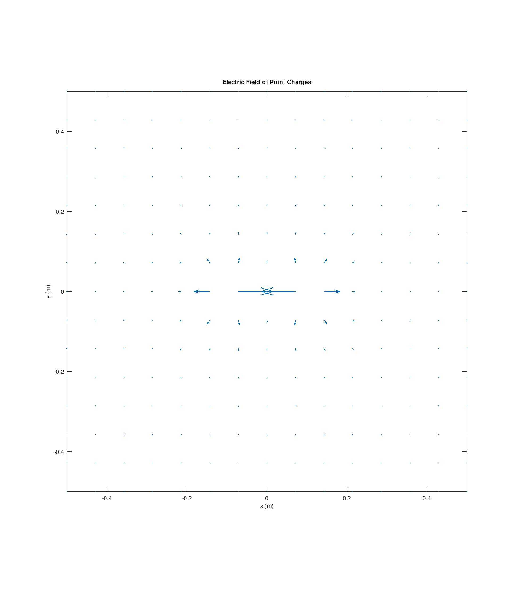
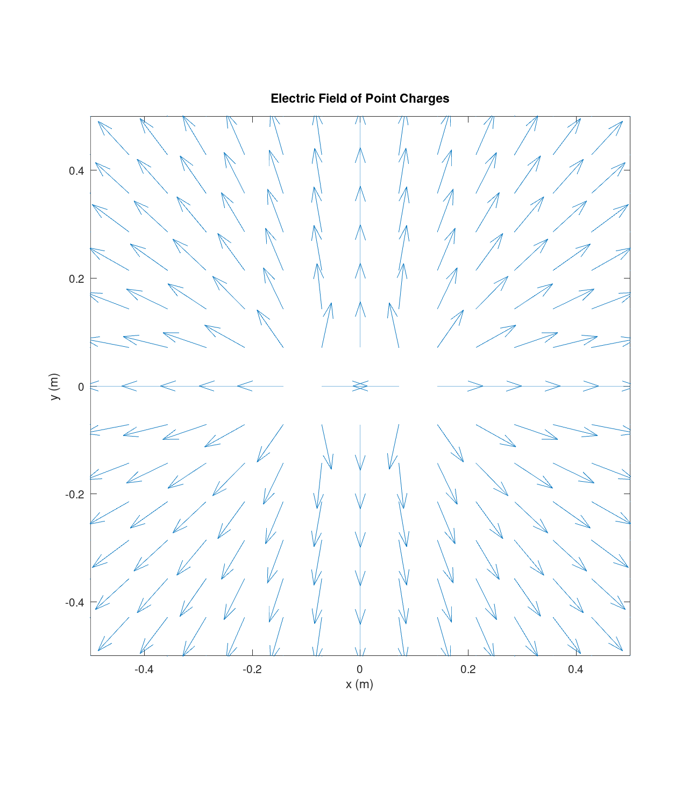

Team 3 Carissa McWilliams, Amelia Harris, and Mitch Nazareth TODO replace with your team number and member names.
Fill in every TODO, run publish('Lab03_notebook.m') from the toolbox
root, print the HTML to PDF, three to five pages.
clear; close all; rng(306); e0 = em.const.eps0();
Q = 2e-9; s = em.src.pointCharge(Q, [0 0 0]); radii = (1:10)'; Enum = em.field.E(s, [radii zeros(10,2)]); Eref = Q ./ (4*pi*e0*radii.^2); relerr = abs(Enum(:,1) - Eref) ./ Eref; disp(' r (m) relative error') disp([radii relerr])
r (m) relative error
1.0000 0
2.0000 0
3.0000 0
4.0000 0
5.0000 0
6.0000 0
7.0000 0
8.0000 0
9.0000 0.0000
10.0000 0
Two equal charges on the x axis. On the plane x = 0 the x component must vanish.
q1 = em.src.pointCharge(1e-9, [-0.1 0 0]); q2 = em.src.pointCharge(1e-9, [ 0.1 0 0]); s2 = em.src.merge(q1, q2); pts = [zeros(200,1) randn(200,2)]; Ev = em.field.E(s2, pts); fprintf('max |Ex| on bisector = %.3e V/m\n', max(abs(Ev(:,1)))); fprintf('max |E| on the same plane = %.3e V/m\n', max(em.vec.mag(Ev))); % TODO justify your absolute tolerance for the first number by comparing % it against the second. State the threshold you chose and why. % % The two equal charges push the electric field euqally in opposite % x directions, % which cancels out, so max |Ex| should be 0, and 10^10 should % be a small enough tolerance.
max |Ex| on bisector = 0.000e+00 V/m max |E| on the same plane = 6.298e+02 V/m
sd = em.src.merge(em.src.pointCharge(1e-9,[0 0 0.05]), em.src.pointCharge(-1e-9,[0 0 -0.05]));
E1 = em.vec.mag(em.field.E(sd, [0 0 10]));
E2 = em.vec.mag(em.field.E(sd, [0 0 20]));
fprintf('|E(r)| / |E(2r)| = %.4f (expect near 8 for a dipole)\n', E1/E2);
|E(r)| / |E(2r)| = 8.0003 (expect near 8 for a dipole)
figure;
em.viz.quiver2(@(r) em.field.E(s2, r), [-0.5 0.5], [-0.5 0.5], 15, ...
struct('normalize', false, 'title', 'Two equal charges, raw magnitudes'));
figure;
em.viz.quiver2(@(r) em.field.E(s2, r), [-0.5 0.5], [-0.5 0.5], 15, ...
struct('normalize', true, 'title', 'Two equal charges, direction only'));
% TODO one or two sentences on why the raw plot is unreadable and what
% information the normalized plot gives up in exchange.
%
% Normalizing the plot makes it easier to see the direction
% of the field grid,as the arrows would otherwise have
% varying lengths.
%
% This however loses the intesity at ecah point.
warning: using the fltk graphics toolkit is discouraged The FLTK graphics toolkit is not actively maintained and has a number of limitations that are unlikely to be fixed. The qt toolkit is recommended instead.


pts5k = randn(5000,3) + 5;
tic; em.field.E(s2, pts5k); t = toc;
fprintf('em.field.E on 5000 points took %.3f s (requirement, under 2 s)\n', t);
em.field.E on 5000 points took 0.002 s (requirement, under 2 s)
Amelia Harris, Mitch Nazareth, and Carissa McWilliams three to six sentences. Three tests were run above, closed form, symmetry, and a scaling law. Say what each one can catch that the other two cannot.
Mitch Nazareth, Amelia Harris, and Carissa McWilliams honest account, or NONE.
We had some mistakes from Lab 1 and Lab 2 to correct before we could begin on this document. Particularly, we did not specify some vectors to have Nx3 inputs. Leading to tests failing Interestingly enough, the tests still ran (and reported passing) when run using Octave, althogh we know that they were specified wrong.
Finally, version controlling, with seperate branches for each individual's work on github massively enhanced our ability to collaborate! :)
runTests
EECE 306 toolbox test suite
--------------------------------------------------------------
11.3.0
eps0 = 8.8541878128e-12 F/m
mu0 = 1.2566370614e-06 H/m
c0 = 2.9979245808e+08 m/s
eta0 = 376.730314 ohm
Derived constant checks passed.
mag([3 4 0]) = 5 (expect 5 exactly)
unit([3 4 0]) =
0.6000 0.8000 0
unit([0 0 0]) (expect all NaN) =
NaN NaN NaN
angle perpendicular = 1.5707963267949 (expect pi/2)
angle antiparallel = 3.14159265358979, real = 1 (expect pi, 1)
fromTo([1 1 1],[2 3 4]) =
1 2 3
mag input 100x3 output [100 1]
unit input 100x3 output [100 3]
angle input 100x3 output [100 1]
fromTo input 100x3 output [100 3]
PASS test_lab01 0.08 s
spherical roundtrip max error = 5.947e-15
cylindrical roundtrip max error = 2.047e-15
c2sph([0 0 1]) =
1 0 0
c2sph([0 0 -1]) =
1.0000 3.1416 0
phi in the four quadrants = 0.7854 2.3562 3.9270 5.4978 rad
all inside [0, 2*pi) = 1
vector roundtrip (spherical pair) max error = 8.882e-16
magnitude change under conversion max = 8.882e-16
vector roundtrip (cylindrical pair) max error = 6.280e-16
at (0, 5, 0), (Ar, Atheta, Aphi) =
3.0000e+00 1.8370e-16 -2.0000e+00
at (4, 0, 0), (Ar, Atheta, Aphi) =
2.0000e+00 1.2246e-16 3.0000e+00
PASS test_lab02 0.04 s
r (m) relative error
1.0000 0
2.0000 0
3.0000 0
4.0000 0
5.0000 0
6.0000 0
7.0000 0
8.0000 0
9.0000 0.0000
10.0000 0
max |Ex| on bisector = 0.000e+00 V/m
max |E| on the same plane = 6.298e+02 V/m
|E(r)| / |E(2r)| = 8.0003 (expect near 8 for a dipole)
em.field.E on 5000 points took 0.002 s (requirement, under 2 s)
PASS test_lab03 0.32 s
--------------------------------------------------------------
3 passed, 0 failed, 3 total
All tests passing.